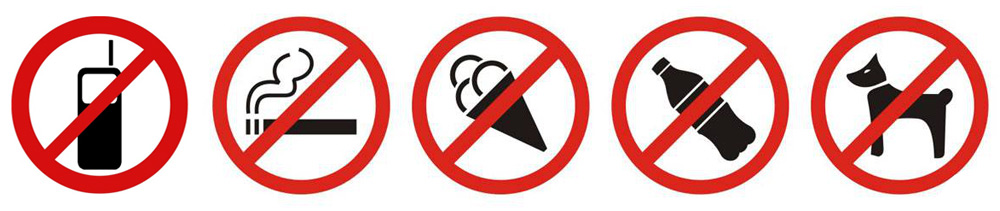

{% extends 'base.html' %} {% block title %} Правила посещения {% endblock %} {%
block main %}
Правила посещения

-
Для посещения Музея посетители объединяются в группы от 10 до 25 человек
во главе с руководителем группы – ответственным лицом.
-
Группа учащихся посещает Музей в сопровождении двух руководителей.
-
Посетители проходят в Музей без сумок, портфелей, пакетов, которые
следует оставить в гардеробной комнате.
-
В Музее запрещено курить, вносить с собой упаковки с водой, едой,
мороженое, употреблять жевательную резинку.
-
Руководители группы несут ответственность за соблюдение порядка и
чистоты в залах, неприкосновенность экспонатов.
-
Посетители Музея проходят по экскурсионному маршруту в сопровождении
смотрителя.
-
Посетители не должны шуметь, кричать и громко разговаривать в залах
Музея, перебивать экскурсовода, спорить друг с другом и сотрудниками
Музея.
-
Посетители не должны мешать друг другу при осмотре экспонатов,
загораживать друг другу вид, тесниться у одного экспоната.
-
Запрещается трогать экспонаты руками, трогать и открывать витрины,
заходить за ограждения, заходить в административную часть помещения.
-
Запрещается толкаться, бегать по залам, наносить удары по стеклам.
-
Громко разговаривать или кричать, подзывая знакомого или друга, а также
пользоваться мобильным телефоном в музее недопустимо.
-
Признаком дурного тона также считается громкое обсуждение или
критические замечания.
-
Для того чтобы ознакомиться с каким-либо экспонатом, не нужно вставать
перед другим посетителем. Лучше всего дождаться, когда он, закончив
осмотр, освободит место.
- Трогать руками музейные экспонаты строго воспрещается.
-
Руководители и члены группы во время проведения Экспозиция должны
соблюдать правила техники безопасности, противопожарной безопасности.
-
Руководители группы несут полную ответственность за выполнение
посетителями Музея ПРАВИЛ ПОВЕДЕНИЯ и ИНСТРУКЦИИ по технике безопасности
жизни посетителей.
- Посетители и руководители групп несут ответственность:
-
За правонарушения, совершенные во время пребывания в Музее, – в
пределах, установленных действующим административным, уголовным и
гражданским законодательством Российской Федерации.
-
За причинение материального ущерба – в пределах, установленных
действующим трудовым законодательством Российской Федерации.
{% endblock %}